Core · Video walkthrough
Read staffing, call summaries and unit response reports
Run staffing and call reports with deliberate date and group scopes, inspect the actual detail tables and timestamp sources, and download a unit-row CSV without treating missing data as zero.
Before you begin
- Use an authorized reporting account in a fictional practice department with existing calls and staffing history.
- Check the department time zone and choose a deliberate report period; preserve operational data and existing staffing.
- Use only fictional training records for practice and share downloaded results with authorized recipients.
Chapters
- Choose the report for the question
- Read the member-level staffing evidence
- Define a Call Summary period
- Check totals against types and states
- Understand how calls are assigned to groups
- Read the individual call rows
- Set the Call Unit Times window
- Interpret timestamps and their linkage
- Download and interpret the real CSV
- Run an explicit group scope
- Read yearly, quarterly and monthly tables
- Change one reporting variable at a time
- Apply the same checks across departments
Watch the walkthrough
Step 1
Choose the report for the question
Reports brings several questions together: who is currently staffed, what happened on calls, and which timestamps have been recorded. In our fictional Chicago Fire department, begin with the Reporting catalog. Find Staffing Report and use its View Report button. The report groups people by their latest recorded staffing level and provides a count and chart. Truck 81 has people in Available, Unavailable and On Shift categories. This is a staffing summary; it does not establish who physically attended an incident.

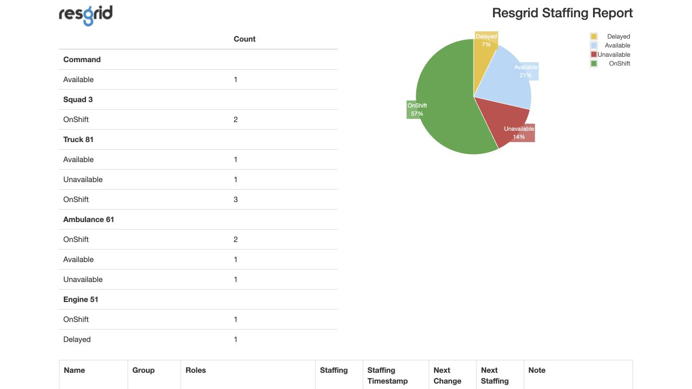
Practice
Open Staffing Report and identify one group with more than one recorded staffing category.
Step 2
Read the member-level staffing evidence
Below the summary, read Name, Group, Roles, Staffing and Staffing Timestamp together. Next Change and Next Staffing describe a scheduled change when one exists. A blank cell supplies no future staffing commitment. Wallace Boden’s row also carries an explicit training note. Farther down, Matthew Casey’s row shows Truck 81, Officer and the training Community Response Navigator role, with On Shift staffing. The report reads existing personnel information; running it does not edit those memberships or statuses.
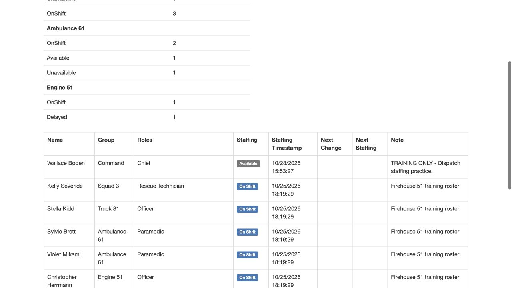
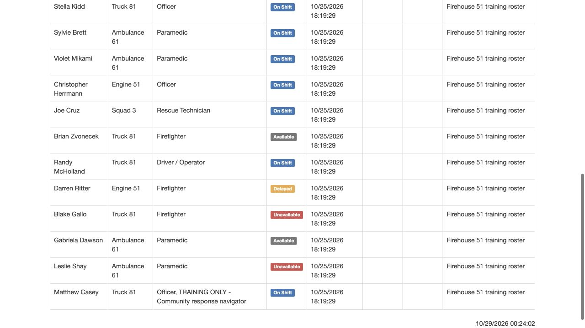
Practice
Find Matthew Casey and read his group, both listed roles and staffing level.
Step 3
Define a Call Summary period
On the Call Summary Report parameter page, check Report Start Time, Report End Time and Group before using Run Report. This example starts October twenty-fifth, twenty twenty-six, at midnight and ends October twenty-ninth at twenty-three thirty. All Groups is selected. These are department-local report boundaries. Read the complete values before running: a different start, end or group changes the population being summarized.
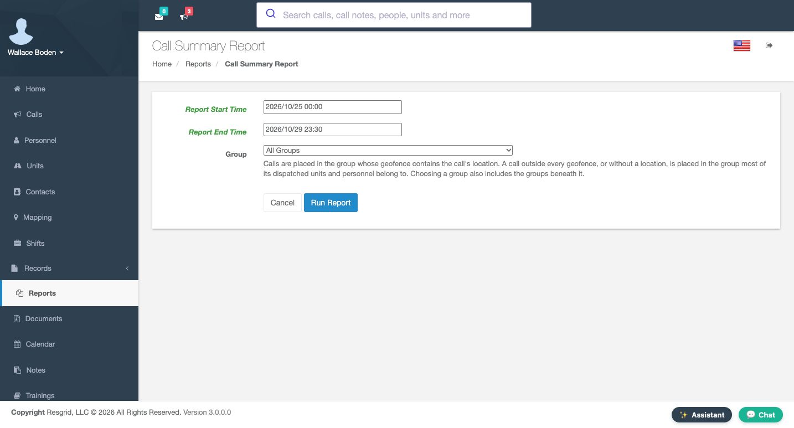
Practice
Prepare the shown October25–29 period and All Groups, then verify both values before Run Report.
Step 4
Check totals against types and states
The resulting header repeats the selected period. This captured run contains fifteen calls, with four open, nine unit responses and four personnel responses. Response totals accumulate across calls; they are not a count of unique department members or vehicles. The tables provide a useful cross-check. Investigation, Structure Fire, Rescue and Medical counts total fifteen. Call States separates eleven Closed from four Active. Read the table labels and denominators before comparing percentages with another report.
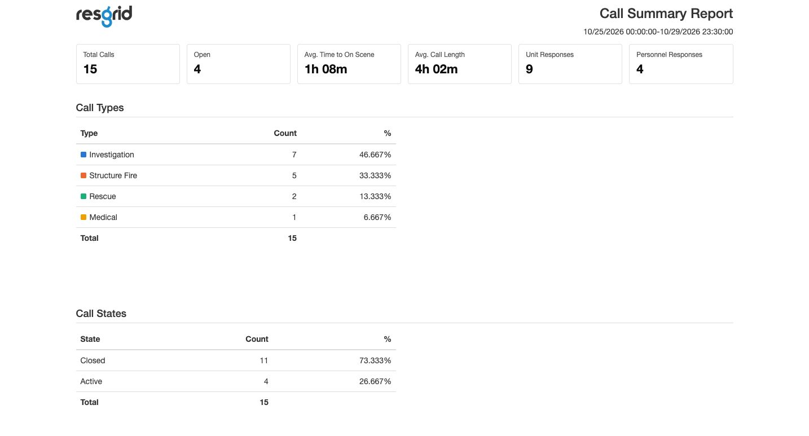
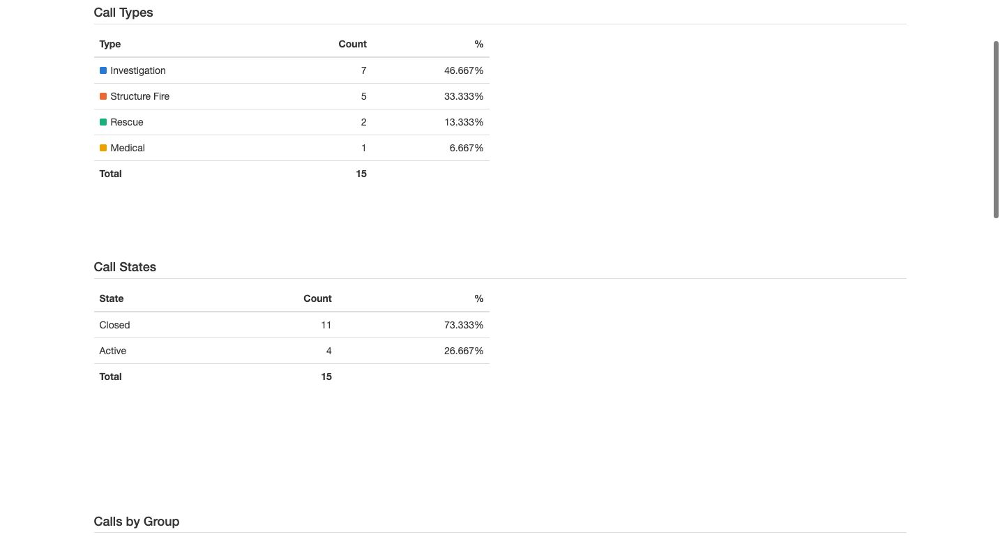
Practice
Confirm that the displayed Closed and Active counts add to the report total.
Step 5
Understand how calls are assigned to groups
Calls by Group explains why a call belongs to a reporting group. Each call counts once. A containing group geofence is used first; otherwise the report uses the group associated with most dispatched resources. Some calls can remain unassigned. This is different from simply listing the current viewer’s group. Here, Firehouse 51 has seven calls and Command has five. Use the explanation when investigating a surprising group total instead of changing memberships to make a report match expectations.
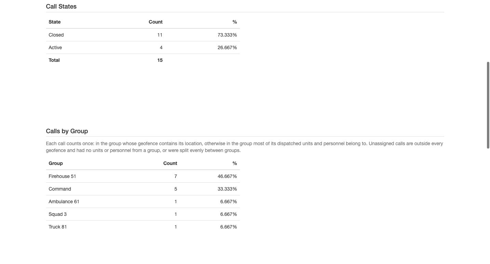
Practice
Read the Calls by Group explanation and identify the five calls attributed to Command.
Step 6
Read the individual call rows
The Calls table lets you inspect the rows behind the summary. Read Number, Name, Type, Group, Logged On, Closed On and the duration columns. The original three DEMO calls are still Open in this result, and their OnScene Time is N/A. The lower rows include the native Unit response and deselection exercise, number ending zero zero zero eight, also Open at this report’s generation. N/A is missing usable timing information, not a zero-minute arrival. Preserve that distinction when explaining averages.
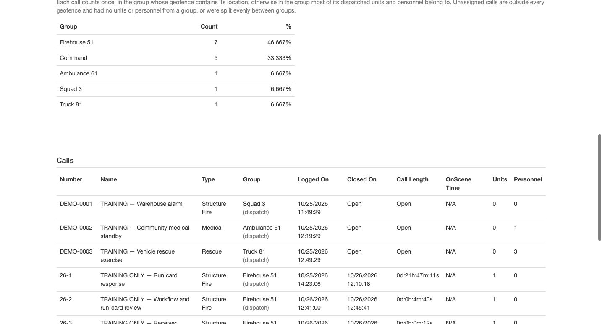
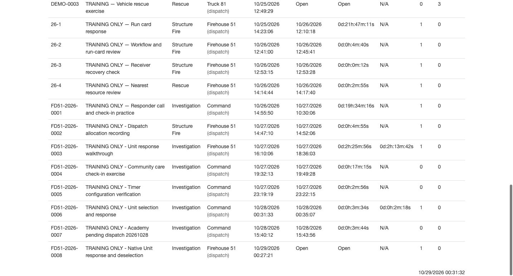
Practice
Locate the native training call ending0008 and distinguish Open from its N/A on-scene value.
Step 7
Set the Call Unit Times window
Call Unit Times answers a more specific question: which dispatch and status timestamps exist for each unit on each call? Its parameter form has start and end times and Run Report. Here the range starts October twenty-fourth at twenty-three thirty and ends October twenty-ninth at twenty-three thirty. That begins thirty minutes earlier than our first Call Summary. Keep those periods distinct when reconciling the results.
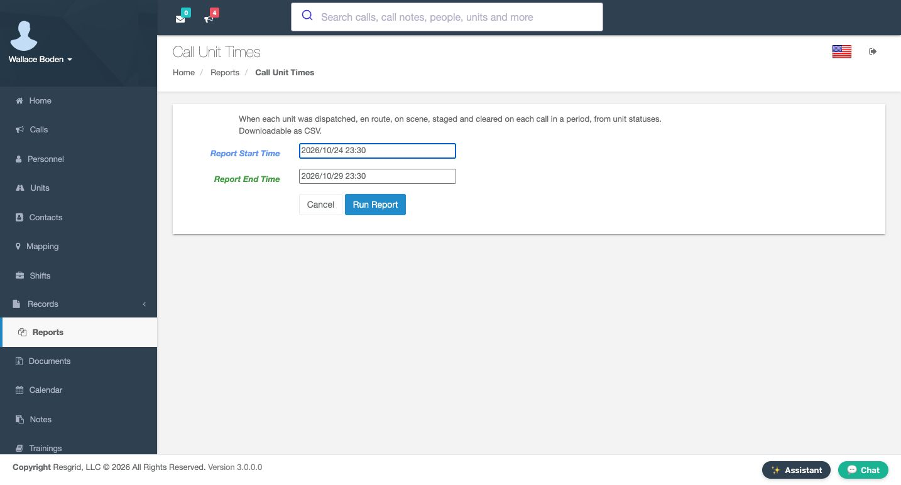
Practice
Read the Unit Times start and end and identify the thirty-minute difference from the earlier summary.
Step 8
Interpret timestamps and their linkage
The generated report has Dispatched, En Route, On Scene, Staging, Cleared and Linked By columns. The original DEMO rows say Dispatch only and leave later status times blank. A dispatch entry alone does not establish an arrival. Other exercise rows say Unit status. Read the recorded timestamps as they stand; some are incomplete or out of order, so review the underlying history before calculating a duration. Some calls explicitly report no unit dispatch or status data. The native exercise shows Ambulance 61 with dispatch and en-route times, while its later cells remain blank. These are software records, not independent physical-arrival verification.
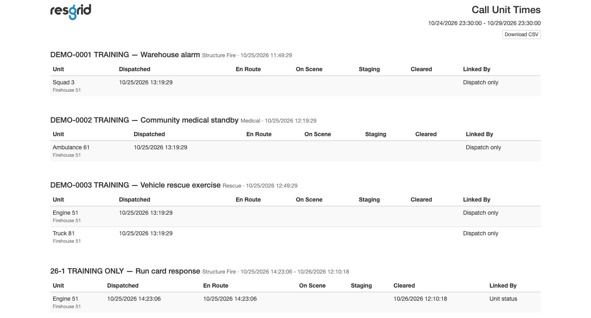
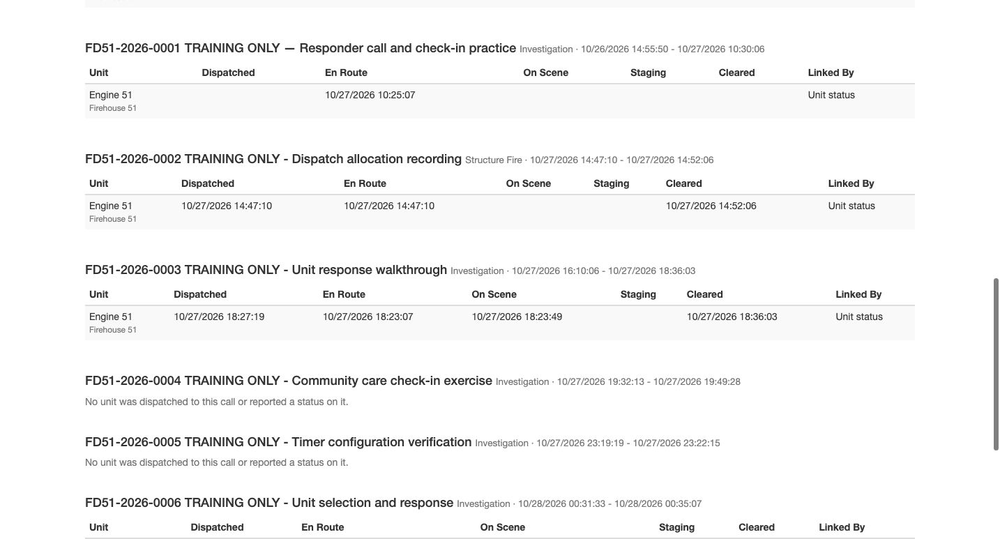
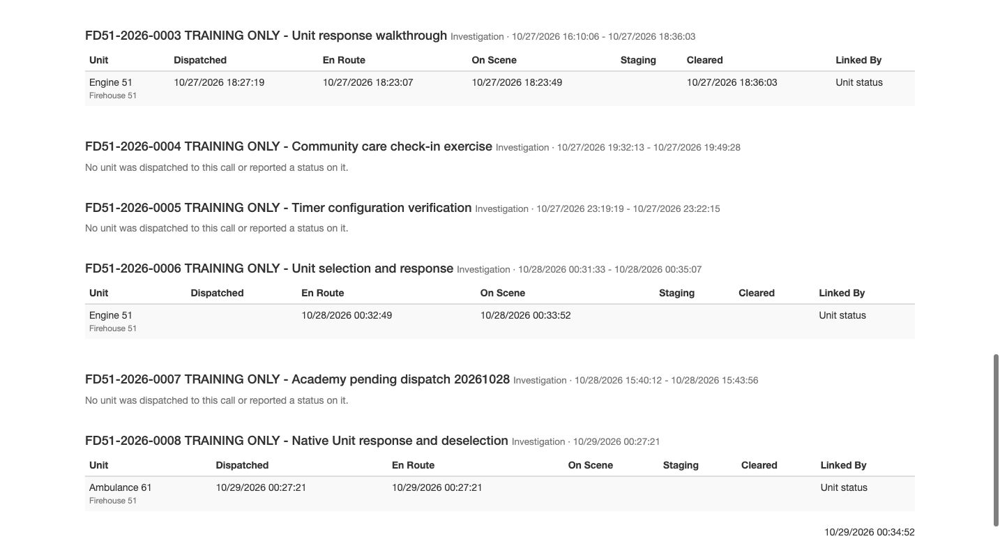
Practice
Compare a Dispatch only row with a Unit status row without filling any blank timestamp.
Step 9
Download and interpret the real CSV
Use Download CSV on this report to obtain its unit rows for the same parameters. The downloaded file includes call and unit identifiers, timestamps and Linked By. This exercise export contains thirteen unit rows for twelve distinct calls: a call with two units creates two rows, while a call with no unit rows contributes none. The file uses DispatchOnly and Explicit codes where the screen says Dispatch only and Unit status. Keep blank times blank, and retain the report period with your file.
Practice
Download the CSV and compare one DispatchOnly row with the matching report row; retain blank cells.
Step 10
Run an explicit group scope
For a separate comparison, the parameters now show the default period spanning late December twenty twenty-five to late December twenty twenty-six. This is not the earlier October week. Select Command in Group and use Run Report. The result explicitly says Command, including the groups beneath it. It contains five calls and none open. Its detail table shows those five exercise rows with Command dispatch attribution. A group filter narrows the report; it does not move resources, reassign calls or close them.
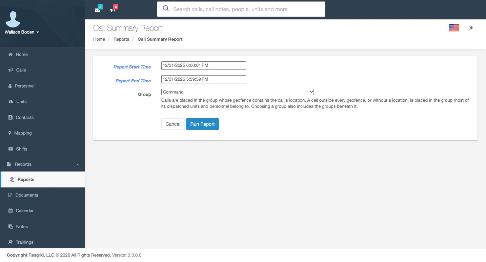
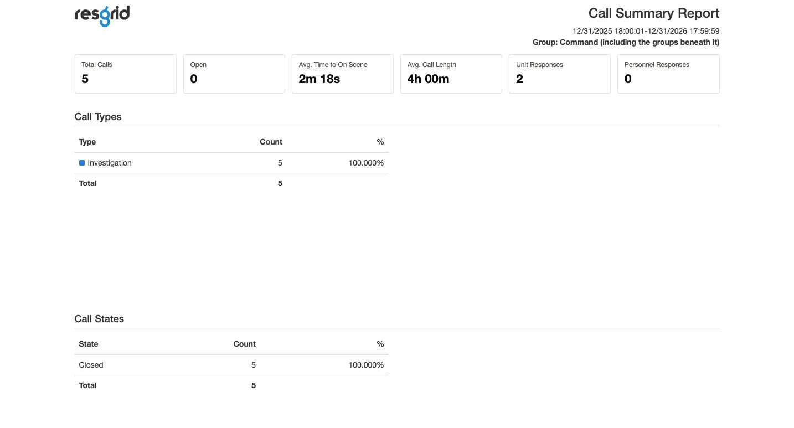
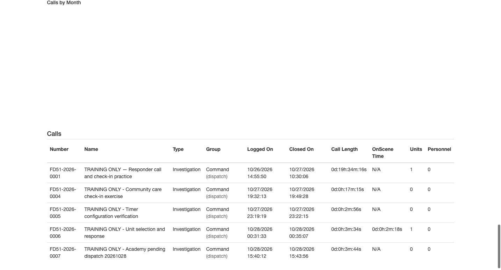
Practice
Run the shown default period with Command and confirm the displayed descendant-group scope.
Step 11
Read yearly, quarterly and monthly tables
The longer period also produces Yearly Statistics. An asterisk marks a partial period; the note explains that the report covers only part of it. Do not describe that row as a complete calendar year. Quarterly Statistics adds YTD, the cumulative call count within the report’s included periods for that year. Monthly Statistics uses the same Calls and YTD distinction. October contains five calls. November and December show zero calls while YTD remains five. These are results from available records in the chosen range, not forecasts of future activity.
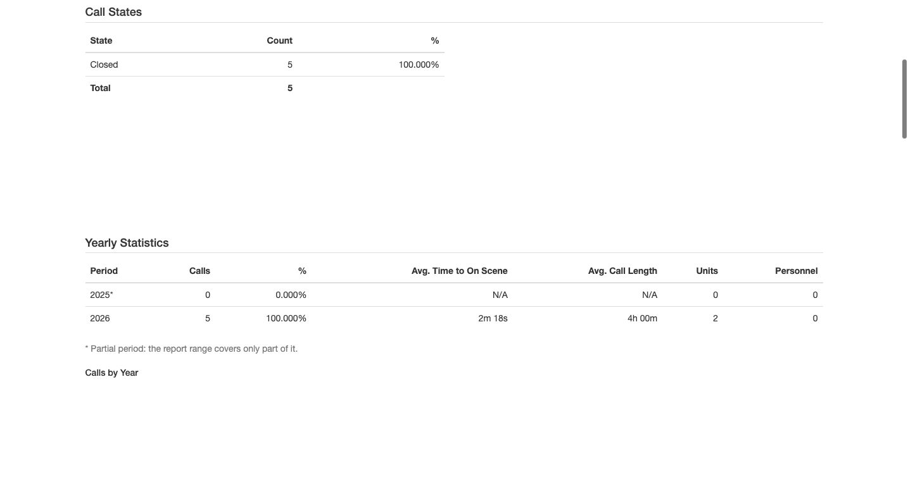
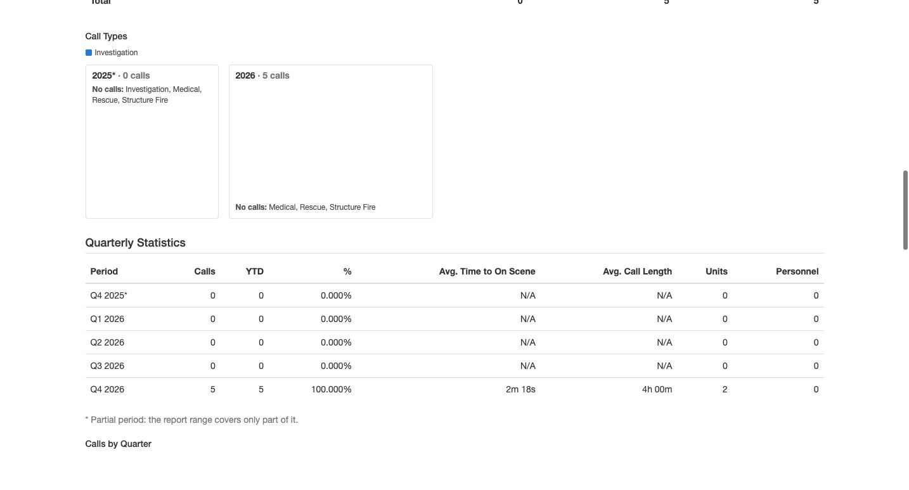
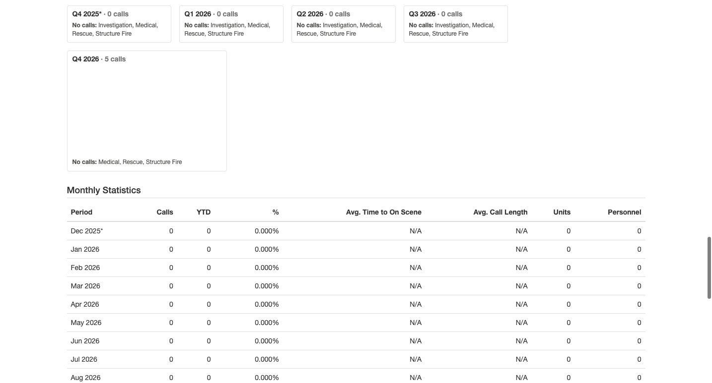
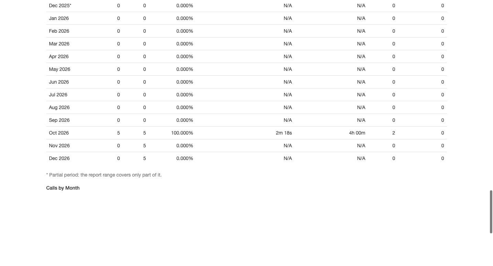
Practice
Find October’s five calls and explain why the following zero-call months still show YTD5.
Step 12
Change one reporting variable at a time
Return to parameters for the same default period and choose All Groups. Keep both time boundaries unchanged, then Run Report. This result contains sixteen calls: four open and twelve closed. That can be compared with the five-call Command result because the periods match. It should not be treated as a new duplicate merely because the earlier October week contained fifteen. Establish the window and scope before interpreting a change in totals.
Practice
Compare Command5 and All Groups16 only after confirming the identical displayed start and end.
Step 13
Apply the same checks across departments
Chicago Fire can review station call distribution; community care and mental-health teams can review operational workload without putting client histories into report notes. Search-and-rescue teams can compare mission-period groups. Security teams can inspect recorded staffing before a patrol review, while wildland coordinators can compare seasonal reporting windows. Industrial teams can examine unit status chronology during a software exercise. In each setting, choose the question, fix the period and scope, inspect the detail rows, and explain missing data before sharing an authorized result.
Practice
Choose one sector example and state the report, period, group scope and missing-data rule you would use.
Examples for your department
- Fire / EMS
- Run a station-scoped call summary for a fixed exercise period, then inspect the matching unit times before describing response totals.
- Community response
- Review operational call workload in an agreed period without adding client histories or treating software timestamps as an assessment.
- Search and rescue
- Compare mission-period call groups using the same boundaries and distinguish missing unit times from recorded zero-duration activity.
- Security
- Review current recorded staffing and a bounded patrol call period; do not equate the staffing chart with attendance.
- Wildland
- Compare a defined seasonal window and its group scope; treat partial-period and future zero rows explicitly.
- Industrial
- Inspect a training call’s unit-status chronology and preserve missing fields in a CSV used for an internal software exercise.
Transcript
Download transcriptRead the complete transcript
Read staffing, call summaries and unit response reports Audience: department administrators, operations coordinators, report reviewers Choose the report for the question Reports brings several questions together: who is currently staffed, what happened on calls, and which timestamps have been recorded. In our fictional Chicago Fire department, begin with the Reporting catalog. Find Staffing Report and use its View Report button. The report groups people by their latest recorded staffing level and provides a count and chart. Truck 81 has people in Available, Unavailable and On Shift categories. This is a staffing summary; it does not establish who physically attended an incident. Practice: Open Staffing Report and identify one group with more than one recorded staffing category. Read the member-level staffing evidence Below the summary, read Name, Group, Roles, Staffing and Staffing Timestamp together. Next Change and Next Staffing describe a scheduled change when one exists. A blank cell supplies no future staffing commitment. Wallace Boden’s row also carries an explicit training note. Farther down, Matthew Casey’s row shows Truck 81, Officer and the training Community Response Navigator role, with On Shift staffing. The report reads existing personnel information; running it does not edit those memberships or statuses. Practice: Find Matthew Casey and read his group, both listed roles and staffing level. Define a Call Summary period On the Call Summary Report parameter page, check Report Start Time, Report End Time and Group before using Run Report. This example starts October twenty-fifth, twenty twenty-six, at midnight and ends October twenty-ninth at twenty-three thirty. All Groups is selected. These are department-local report boundaries. Read the complete values before running: a different start, end or group changes the population being summarized. Practice: Prepare the shown October25–29 period and All Groups, then verify both values before Run Report. Check totals against types and states The resulting header repeats the selected period. This captured run contains fifteen calls, with four open, nine unit responses and four personnel responses. Response totals accumulate across calls; they are not a count of unique department members or vehicles. The tables provide a useful cross-check. Investigation, Structure Fire, Rescue and Medical counts total fifteen. Call States separates eleven Closed from four Active. Read the table labels and denominators before comparing percentages with another report. Practice: Confirm that the displayed Closed and Active counts add to the report total. Understand how calls are assigned to groups Calls by Group explains why a call belongs to a reporting group. Each call counts once. A containing group geofence is used first; otherwise the report uses the group associated with most dispatched resources. Some calls can remain unassigned. This is different from simply listing the current viewer’s group. Here, Firehouse 51 has seven calls and Command has five. Use the explanation when investigating a surprising group total instead of changing memberships to make a report match expectations. Practice: Read the Calls by Group explanation and identify the five calls attributed to Command. Read the individual call rows The Calls table lets you inspect the rows behind the summary. Read Number, Name, Type, Group, Logged On, Closed On and the duration columns. The original three DEMO calls are still Open in this result, and their OnScene Time is N/A. The lower rows include the native Unit response and deselection exercise, number ending zero zero zero eight, also Open at this report’s generation. N/A is missing usable timing information, not a zero-minute arrival. Preserve that distinction when explaining averages. Practice: Locate the native training call ending0008 and distinguish Open from its N/A on-scene value. Set the Call Unit Times window Call Unit Times answers a more specific question: which dispatch and status timestamps exist for each unit on each call? Its parameter form has start and end times and Run Report. Here the range starts October twenty-fourth at twenty-three thirty and ends October twenty-ninth at twenty-three thirty. That begins thirty minutes earlier than our first Call Summary. Keep those periods distinct when reconciling the results. Practice: Read the Unit Times start and end and identify the thirty-minute difference from the earlier summary. Interpret timestamps and their linkage The generated report has Dispatched, En Route, On Scene, Staging, Cleared and Linked By columns. The original DEMO rows say Dispatch only and leave later status times blank. A dispatch entry alone does not establish an arrival. Other exercise rows say Unit status. Read the recorded timestamps as they stand; some are incomplete or out of order, so review the underlying history before calculating a duration. Some calls explicitly report no unit dispatch or status data. The native exercise shows Ambulance 61 with dispatch and en-route times, while its later cells remain blank. These are software records, not independent physical-arrival verification. Practice: Compare a Dispatch only row with a Unit status row without filling any blank timestamp. Download and interpret the real CSV Use Download CSV on this report to obtain its unit rows for the same parameters. The downloaded file includes call and unit identifiers, timestamps and Linked By. This exercise export contains thirteen unit rows for twelve distinct calls: a call with two units creates two rows, while a call with no unit rows contributes none. The file uses DispatchOnly and Explicit codes where the screen says Dispatch only and Unit status. Keep blank times blank, and retain the report period with your file. Practice: Download the CSV and compare one DispatchOnly row with the matching report row; retain blank cells. Run an explicit group scope For a separate comparison, the parameters now show the default period spanning late December twenty twenty-five to late December twenty twenty-six. This is not the earlier October week. Select Command in Group and use Run Report. The result explicitly says Command, including the groups beneath it. It contains five calls and none open. Its detail table shows those five exercise rows with Command dispatch attribution. A group filter narrows the report; it does not move resources, reassign calls or close them. Practice: Run the shown default period with Command and confirm the displayed descendant-group scope. Read yearly, quarterly and monthly tables The longer period also produces Yearly Statistics. An asterisk marks a partial period; the note explains that the report covers only part of it. Do not describe that row as a complete calendar year. Quarterly Statistics adds YTD, the cumulative call count within the report’s included periods for that year. Monthly Statistics uses the same Calls and YTD distinction. October contains five calls. November and December show zero calls while YTD remains five. These are results from available records in the chosen range, not forecasts of future activity. Practice: Find October’s five calls and explain why the following zero-call months still show YTD5. Change one reporting variable at a time Return to parameters for the same default period and choose All Groups. Keep both time boundaries unchanged, then Run Report. This result contains sixteen calls: four open and twelve closed. That can be compared with the five-call Command result because the periods match. It should not be treated as a new duplicate merely because the earlier October week contained fifteen. Establish the window and scope before interpreting a change in totals. Practice: Compare Command5 and All Groups16 only after confirming the identical displayed start and end. Apply the same checks across departments Chicago Fire can review station call distribution; community care and mental-health teams can review operational workload without putting client histories into report notes. Search-and-rescue teams can compare mission-period groups. Security teams can inspect recorded staffing before a patrol review, while wildland coordinators can compare seasonal reporting windows. Industrial teams can examine unit status chronology during a software exercise. In each setting, choose the question, fix the period and scope, inspect the detail rows, and explain missing data before sharing an authorized result. Practice: Choose one sector example and state the report, period, group scope and missing-data rule you would use. Examples for your department Fire / EMS: Run a station-scoped call summary for a fixed exercise period, then inspect the matching unit times before describing response totals. Community response: Review operational call workload in an agreed period without adding client histories or treating software timestamps as an assessment. Search and rescue: Compare mission-period call groups using the same boundaries and distinguish missing unit times from recorded zero-duration activity. Security: Review current recorded staffing and a bounded patrol call period; do not equate the staffing chart with attendance. Wildland: Compare a defined seasonal window and its group scope; treat partial-period and future zero rows explicitly. Industrial: Inspect a training call’s unit-status chronology and preserve missing fields in a CSV used for an internal software exercise.